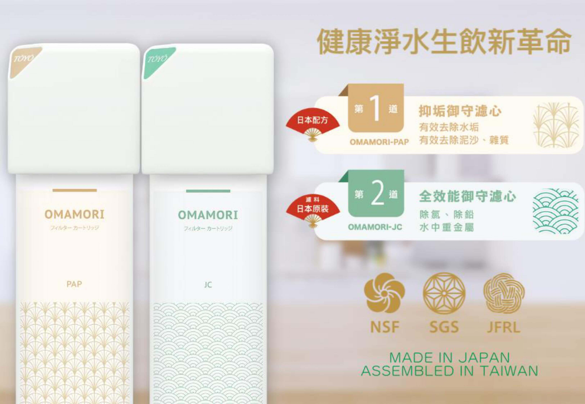

SPACO 觸控桌上型-冰冷熱飲水機 A-3
- 提供常溫水、冰水、熱水三種水溫用水情境
- 一機多功能，隨按隨喝
- 觸控式輕巧不鏽鋼水龍頭，時尚不占空間
- 大容量3公升冰水，適合家庭、朋友聚會
- 智慧型漏水偵測，讓您永遠喝到安全高品質的水



建議售價：28800元
聯絡我們
商品內容
SPACO A-3 主機X 1
OMAMORI – 2P 淨水御守-全效能生飲前置淨水組 X 1
商品描述
SPACO 觸控桌上型-冰冷熱飲水機 A-3
THE TASTE OF GALAXIES
歐美品味人士熱銷首選
輕按一鍵，享受常溫水、冰水、熱水
- 泡茶、泡牛奶、製作冰飲滿足所有人的健康飲水需求!
- 適合家庭、餐廳、酒吧、招待會所、辦公空間等
- 免煮水，冰冷熱飲水機隨時款待!!
【保養及維護】
建議使用2年以上，需回原廠進行保養維護。未使用靜置1周以上，使用前請先排放水10-15分鐘，若仍有狀況需回原廠進行保養維護，靜置一個月以上可另行預約客服0800-090-881到府服務管線檢查。
商品規格
| 型號 / 品名 | A-3 冰冷熱飲水機 |
| 功能 | 冰水 / 熱水 / 常溫 |
| 顏色 | 星光白 |
| 尺寸 | 23(W) x 34(D) x 48.5(H) 公分 |
| 出水溫度 | 冰水、3℃ -10℃；熱水80℃ -95℃；常溫 |
| 製水量 | 製冷量達每小時20公升；加熱量達每小時12公升 |
| 缸體容量 | 冰水系統3公升；熱水系統1.2公升 |
| 製冰內膽 | SUS-304(不鏽鋼) |
| 加熱內膽 | SUS-304(不鏽鋼) |
| 進排水口徑 | 1/4" |
| 電壓 | AC115V/60HZ |
| 功率 | 600Ｗ |
| 標準配件 | 淨水御守-全效能生飲前置淨水組 |
| 適用水壓 | 2kg/25psi |
| 產地 | 台灣研發 / 台灣製造 |